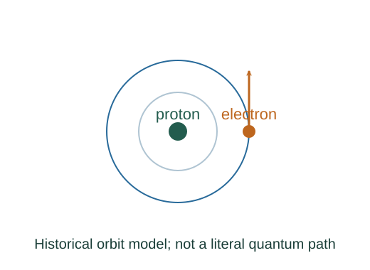

Derive hydrogen’s energy scale with the Bohr model
The Bohr model combines Coulomb attraction with a quantization rule. It reproduces the main nonrelativistic hydrogen energy levels, while a full quantum treatment replaces its literal circular orbits.
What the symbols mean
me: electron mass in the fixed-proton approximation; n: positive integer; ke = 1/(4πε₀); r: model orbit radius.
When this applies
One electron and a fixed proton, nonrelativistic motion, Bohr angular-momentum postulate. Reduced mass and finer corrections are neglected.
Developing the argument

Supply the centripetal force
Coulomb attraction maintains a model circular orbit. This classical relation connects speed and radius.
Add the quantization postulate
Bohr’s new input is angular momentum equal to nℏ. It is not implied by the force balance.
Eliminate speed
Substitute v = nℏ/(mer) into the force balance and solve for allowed radii.
Add kinetic and electric potential energy
The force balance gives K = kee²/(2r), while potential with zero at infinity is −kee²/r. Their sum is negative and proportional to −1/r.
A closer lookWhy is the electric potential energy negative? ↗A worked example
The n = 2 level is about −3.40 eV. A transition from n = 2 to n = 1 emits about 10.2 eV, corresponding to wavelength near 122 nm.
Derivation behind this calculation ↗A point to keep straight
This is a model derivation with an explicit quantization postulate. It does not establish that electrons follow definite classical orbits.
Check the assumptions and derivation ↗